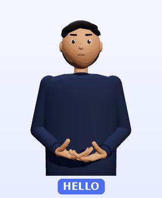
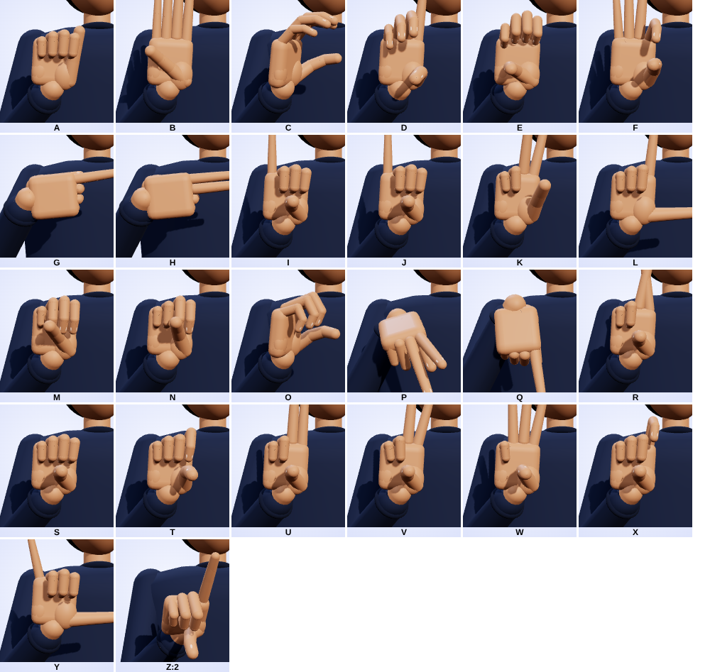

Chrome extension · Free · Open source
Meetings, signed in ASL — live.
SignBuddy puts a small 3D character in the corner of Google Meet, Zoom, Teams or YouTube. It listens to what people say and signs it in American Sign Language, with captions underneath.
Made for Deaf and hard-of-hearing people who prefer sign language to reading captions.

Try it now
Type a sentence, or press the microphone and speak. No install needed.
ASL gloss —
Signs it knows
Alphabet (any other word is fingerspelled)
How it works
- 1
Listens
Captures the meeting tab's audio (not just your mic) and turns speech into text with Chrome's built-in speech recognition.
- 2
Translates
Rewrites English into ASL gloss — ASL word order, dropping words like “is” and “the”. “What is your name?” becomes
YOUR NAME WHAT. - 3
Signs
The 3D character plays each known sign and fingerspells the rest. Eyebrows rise for yes/no questions, lower for WH-questions, and the head shakes for “not”.
Real 3D hands
Five fingers with three joints each, so handshapes look like real ASL letters.
Live captions
Shown under the character as a backup. Turn them off any time.
Stays out of the way
Drag it anywhere, choose small / medium / large, or hide it with Alt+Shift+S.
Keeps up
Slow / normal / fast signing, and a “catching up…” notice when speech is faster than signing.

Install in Chrome
SignBuddy isn't on the Chrome Web Store yet. Until then, install it in developer mode — it takes a minute.
- Download the zip and unzip it.
- Open
chrome://extensionsand turn on Developer mode (top right). - Click Load unpacked and choose the unzipped
signbuddyfolder. - Pin the 🤟 icon, open a meeting or a YouTube video, and press Start.
Honest limitations
- It knows 19 word signs plus A–Z; everything else is fingerspelled, which is slower than speech.
- The English→ASL step uses simple rules. It is not full ASL grammar.
- Signs are hand-made poses, not motion capture. Please check with Deaf signers before relying on it.
- Speech recognition uses Chrome's built-in service, which sends audio to Google. See the privacy page.